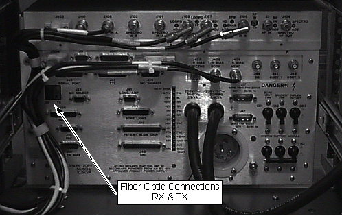

Operating Documentation
Direction 5133315-3, Rev# 14
Signa EXCITE HD 1.5T Service Methods
Module Version 2.0, Version Date 6/3/10
Operating Documentation |
| Required Persons | Preliminary Reqs | Procedure | Finalization |
|---|---|---|---|
| 1 |
The PAC is preset to 9 VDC at the factory (setting should be verified if the spare board seal is broken).
| NOTE: | Systems without a fiber optic repeater at the Pen wall need to set the PAC voltage to 8 Volts DC. |
| NOTE: | Possible equipment damage. To prevent possible damage to equipment due to incorrect voltage settings, systems without fiber optic repeater at the Pen wall need to set the PAC voltage to 8 Volts DC. |
| NOTE: | FAILURE TO PROPERLY CONFIGURE JUMPER JP1 ON THE HIGH VOLTAGE BOARD COULD POSSIBLY RESULT IN SNR DEGRADATION AND DYNAMIC DISABLE OR DIRECT DRIVE FAILURES. |
| Item | Qty | Effectivity | Part# | Manufacturer | |
|---|---|---|---|---|---|
| 100 MHz Scope | 1 | - | 46-183029P61 | - | |
| Digital Multimeter (DMM) | 1 | - | 46-194427P49 | - | |
| Pot Tweaker | 1 | - | 46-194427P361 | - | |
| Condition | Reference | Effectivity |
|---|---|---|
The SSM High Voltage (HV) Board jumper, JP1, must be set to either the 1000V position for 1.5T or 500V position for 1.0T systems. This high voltage bias is for the Body 1 and Body 2 Dynamic Disable Circuits in the RF body coil and the Direct Drive Circuitry (DD) in the body hybrid splitter. Jumper JP1 should come preset for all new installations and should not require changing. If the HV board ever fails, however, and is replaced, the position of this jumper on the new board should be checked before it is installed. | - | - |
Remove Fiber Optic cables from rear of SSM (RX & TX). See Illustration 1.
Illustration 1: FIBER OPTIC CABLE CONNECTIONS

Remove the plastic cover on the front of the SSM.
| NOTE: | Place DIP Switch #1 in the UP position last. Order of DIP switch placement is important otherwise system will not recognize changes. |
To change the PAC voltage setting, perform one of the following steps:
For systems without the fiber optic repeater, set to 8 VDC. Place switch 6 in the Down position and switches 4 & 1 in the UP position. Ensure that all other switches are in the Down position.
Verify system is recognizing change by the LED display; Bank 1 LEDs 1, 2, & 5 will be illuminated.
For systems with the fiber optic repeater, set to 9 VDC, place switches 6, 4, and 1 in the UP position.
Verify system is recognizing change by the LED display; Bank 1 LEDs 1, 3, & 5 will be illuminated.
Place switch 1 in the Down position.
Place all other switches in the Down position.
Cycle the main breaker power at the SSM by turning CB4 to the OFF position, waiting 15 seconds, then setting CB4 to the ON position. This step saves the changes to the SSM.
Replace the plastic cover on the front of the SSM.
Connect the Fiber Optic cables to RX & TX on rear of SSM.
Perform TPS Reset by clicking the [Service Desktop] icon and clicking the [TPS Reset] button on the Service Rx.
No finalization steps.